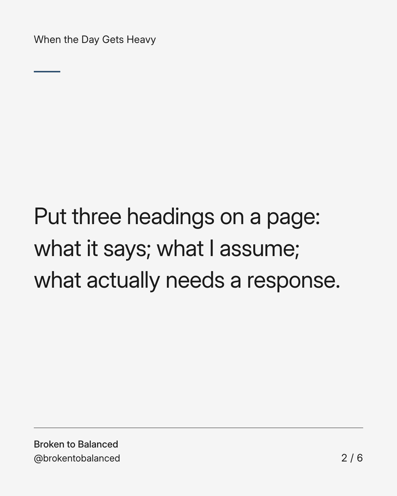
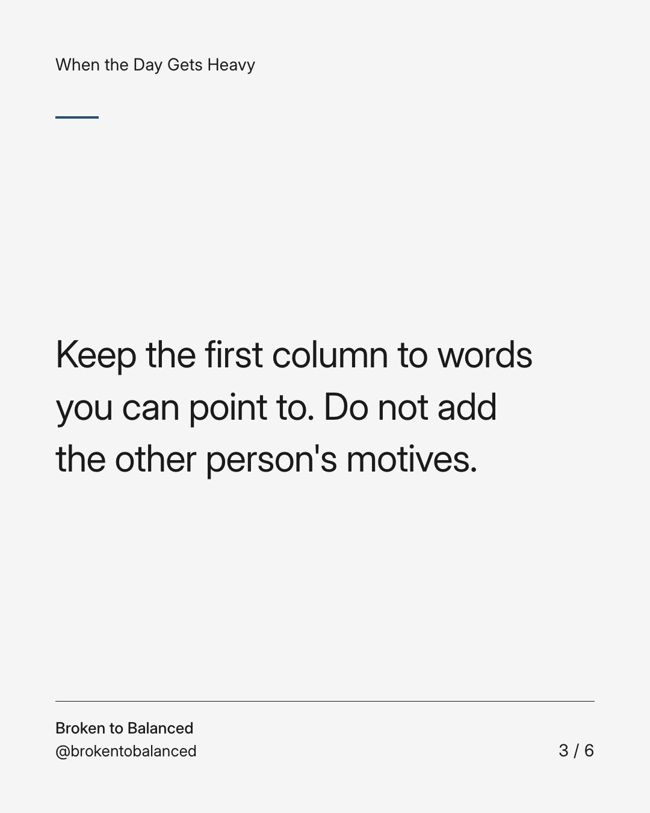
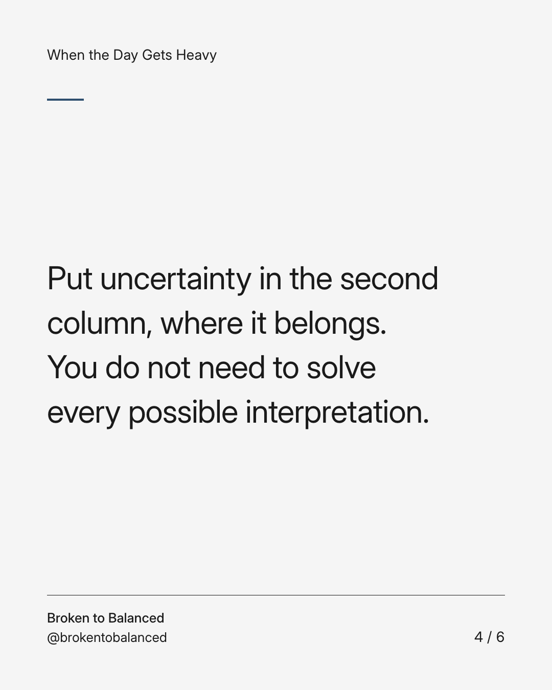
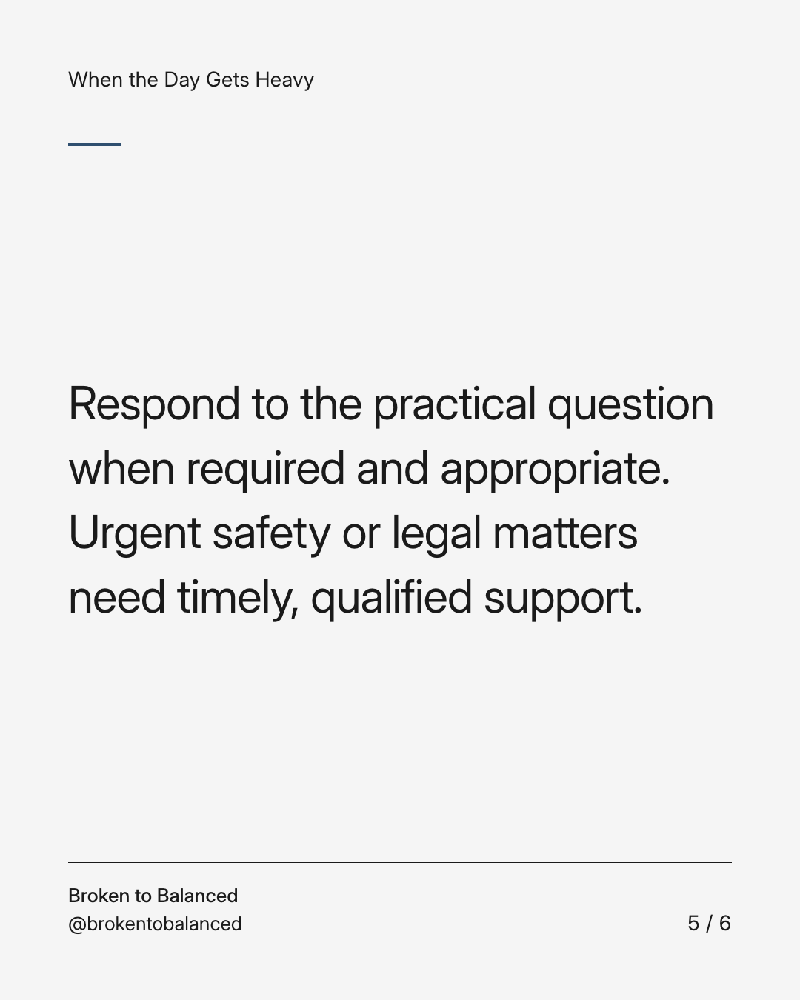
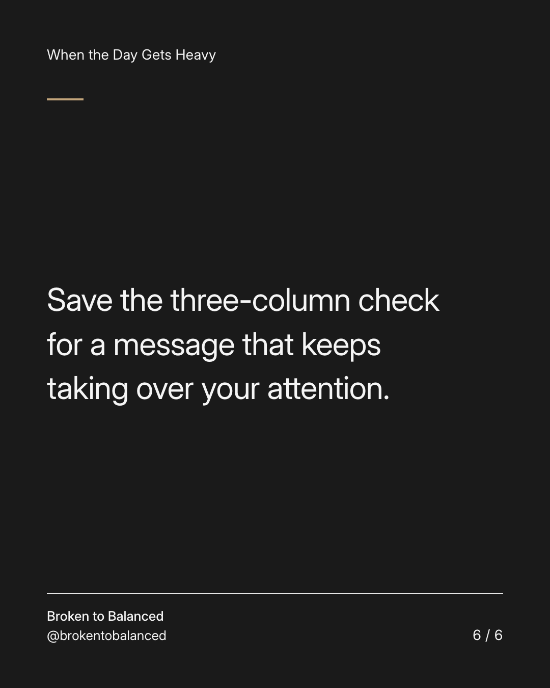

Exact text and accessibility text
Before rereading the message for the tenth time, try this.
Slide 1 of 6. Before rereading the message for the tenth time, try this.


Exact text and accessibility text
Put three headings on a page: what it says; what I assume; what actually needs a response.
Slide 2 of 6. Put three headings on a page: what it says; what I assume; what actually needs a response.


Exact text and accessibility text
Keep the first column to words you can point to. Do not add the other person's motives.
Slide 3 of 6. Keep the first column to words you can point to. Do not add the other person's motives.


Exact text and accessibility text
Put uncertainty in the second column, where it belongs. You do not need to solve every possible interpretation.
Slide 4 of 6. Put uncertainty in the second column, where it belongs. You do not need to solve every possible interpretation.


Exact text and accessibility text
Respond to the practical question when required and appropriate. Urgent safety or legal matters need timely, qualified support.
Slide 5 of 6. Respond to the practical question when required and appropriate. Urgent safety or legal matters need timely, qualified support.


Exact text and accessibility text
Save the three-column check for a message that keeps taking over your attention.
Slide 6 of 6. Save the three-column check for a message that keeps taking over your attention.
Exact caption
Plain-text fallback: select and copy the caption.